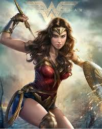
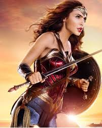

She’s easily the most famous female superhero of all time, and she’s doing it on her own. She’s Wonder Woman, and she’s been a solo superhero since her first DC Comics appearance in 1941. Though Gal Gadot is taking her to the big screen in Wonder Woman, out Friday, until now, the best-known depiction of Wonder Woman has to be the Lynda Carter version, which first premiered on Nov. 7, 1975.
Wonder Woman
About
Wonder Woman is a 2017 American superhero film based on the DC Comics character of the same name, produced by DC Entertainment in association with RatPac Entertainment and Chinese company Tencent Pictures, and distributed by Warner Bros. Pictures. It is the fourth installment in the DC Extended Universe (DCEU).[6] Directed by Patty Jenkins from a screenplay by Allan Heinberg and a story by Heinberg, Zack Snyder, and Jason Fuchs, Wonder Woman stars Gal Gadot in the title role, alongside Chris Pine, Robin Wright, Danny Huston, David Thewlis, Connie Nielsen, and Elena Anaya. It is the second live action theatrical film featuring Wonder Woman following her debut in 2016's Batman v Superman: Dawn of Justice.[7] In Wonder Woman, the Amazon princess Diana sets out to stop World War I, believing the conflict was started by the longtime enemy of the Amazons, Ares, after American pilot and spy Steve Trevor crash-lands on their island Themyscira and informs her about it.
Development of a live action Wonder Woman film began in 1996, with Ivan Reitman slated to produce and possibly direct. The project floundered in development hell for many years; Jon Cohen, Todd Alcott, and Joss Whedon, among others, were also attached to the project at various points. Warner Bros. announced the film in 2010 and Jenkins signed on to direct in 2015. Inspiration for Wonder Woman was drawn from Wonder Woman creator William Moulton Marston's 1940s stories and George Pérez's 1980s stories about Wonder Woman, as well as the New 52 incarnation of the character. Principal photography began on November 21, 2015, with filming taking place in the United Kingdom, France, and Italy before finishing on May 6, 2016, the 123rd anniversary of Marston's birth. Additional filming took place in November 2016.
Wonder Woman had its world premiere in Shanghai on May 15, 2017, and was released in the United States on June 2, 2017, in 2D, Real D 3D, and IMAX 3D by Warner Bros. Pictures. The film received largely positive reviews, with praise for its direction, acting, visuals, action sequences, and musical score.[8] The film set several box office records,[9] and became the fifth highest-grossing superhero film domestically and 20th highest-grossing film in the United States overall. It grossed over $821 million worldwide, making it the tenth highest-grossing film of 2017. As of August 2019, Rotten Tomatoes has listed the film fourth on its list of the "Best Superhero Movies of All Time",[10][note 1] and the American Film Institute selected it as one of the top 10 films of 2017.[11] A sequel, Wonder Woman 1984, is scheduled to be released on June 5, 2020, with Jenkins returning as director and Gadot reprising her role
Trailer
Series

Wonder Woman has returned home to Themyscira — and she's brought new series writer Steve Orlando with her. After two guest stints on Wonder Woman, the DC 'exclusive' writer has taken over the title post-G. Willow Wilson and into her upcoming milestone #750. It's a tumultuous times, as the gods have returned while her relationship with Steve Trevor is on the rocks. Newsarama spoke with Orlando about his recently-launched Wonder Woman run, as well as his concurrent work on Gotham City Monsters..

Batman v Superman: Dawn of Justice introduced the Caped Crusader and Wonder Woman to the DC Extended Universe, marking the first time DC’s Trinity has appeared together in a live-action feature film. The following year, Batman, Superman, and Wonder Woman joined forces again to thwart the invasion of Steppenwolf with The Flash, Cyborg, and Aquaman by their side. Of course, a personal family tragedy resulted in Zack Snyder departing Justice League before post-production work was complete but the filmmaker has been sharing behind-the-scenes images from the project on Vero since it was released in theaters. Now, Zack Snyder’s most recent Justice League photo offers fans a behind-the-scenes look at Ben Affleck, Henry Cavill, and Gal Gadot in their respective roles as Batman, Superman, and Wonder Woman.
